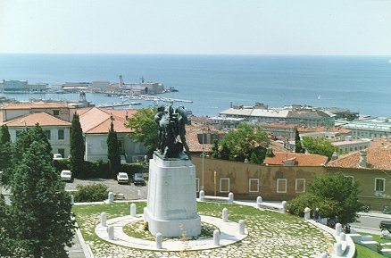
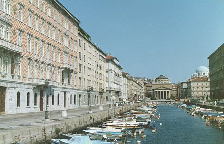
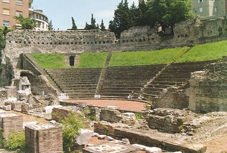
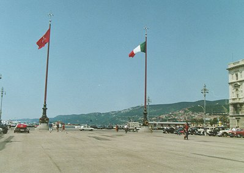
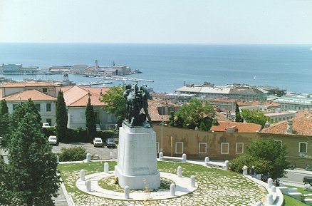
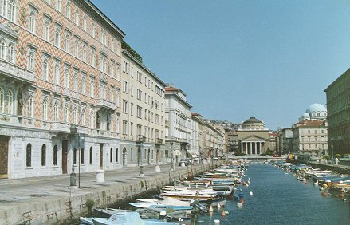
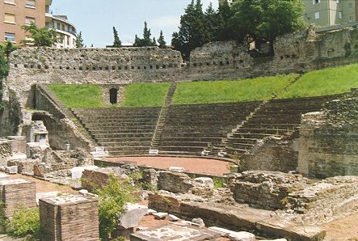
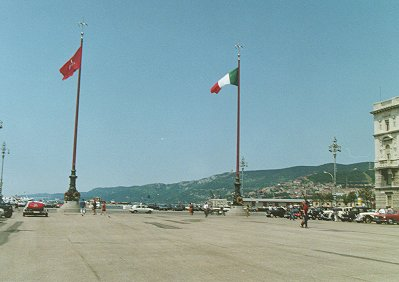

Last updated: December 24, 2000
Trieste, Italy |

The Monument to the Fallen Soldiers on San Giusto Hill.

The Church of St. Antonio Taumaturgo on the Grand Canal.

The Roman Theatre.

Piazza Unità d'Italia.
Last updated: December 24, 2000 |
||
|
    |